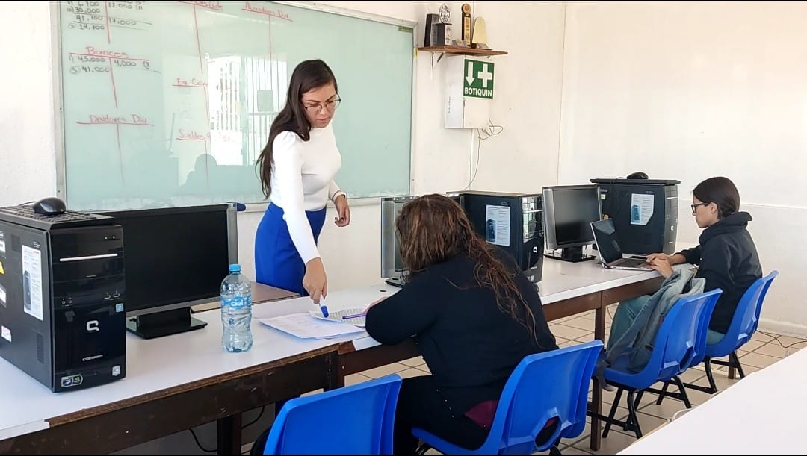

"Aplicación de Normas y Procedimientos Contables y Fiscales"
- Contabilidad general con paquete contable
- Contabilidad de costos asistida por computadora
- Determinación de obligaciones fiscales
Perfil del Egresado
- Interpretar, extraer, registrar y presentar datos y movimientos contables con el apoyo de la Paquetería Contable en Computadora, así como la elaboración
de cuentas, estados y resultados, identificar también las Empresas de transformación en cuanto a cotos y registros fiscales manual y electrónico, mediante
normas y procedimientos de control. Así como calcular todo tipo de impuestos, nóminas, cuotas, aportaciones, pagos y declaraciones, tanto de personas
físicas como morales, mediante el manejo de formatos oficiales, conociendo las leyes del ISPT, IVA, IMSS, INFONAVIT vigentes.
